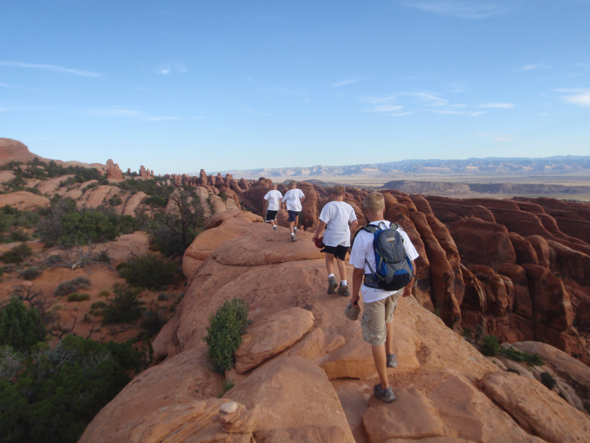

From The Stately Oaks to the Broad Magnolias I walk to class. The sun's rays are piercing while the humidity starts to set in; this is it, classes are in session. This isn't the first time I've been obligated to rethink my choices to hike it today, but that won't stop me from walking again tomorrow. Louisiana's weather is merely a game of chance, meaning I could leave my apartment at 40°F and finish class after the Louisiana Earth has already been baked to a whopping 75°F in a matter of hours. Funny thing is, this is how it is here in Baton Rouge. We experience all four seasons throughout the year; peeking out every once in a while. We see skies that resemble cotton candy. We have the liveliest culture with some of the greatest food imaginable. We don't just want to be successful, We seek to be the best. #LPLG
When my mind isn't on school, I am in search for a career in the technology field, specifically web design, web development, data science, or container management. As I am finishing up my degree I am avidly pursuing a creative, challenging position in the Pacific Northwest at a company that reflects the morals and values similar to that of my own. My academia focuses upon business administration, information technology, and information systems which enables me to understand business aspects such as project management and technology aspects such as web development. Outside of class I work on several personal projects with relevant virtualization, container, version control, and web development technologies to further my knowledge focused towards web infrastructure. I assure you I have the desire to learn at a rapid rate.
As a great example, the semester is coming to an end and my senior ISDS team has recently finished our WordPress website for a local non-profit organization, the Baton Rouge Youth Coalition (BRYC). Although the new site is not set to go-live just yet, I urge you to check with thebryc.org to see the hardwork that went into making BRYC's site a modern beauty. Extensive documentation is available upon request.
But wait, who are you? Who am I? Well, if you haven't already guessed, my name is Josef. I've taken great interest in the outdoors and quite frankly, that's mostly why I am looking to test my talents in the Pacific Northwest. I wasn't always this devoted to the outdoors though. I can attribute that to my experiences in Boy Scouts and on family trips with my father and three brothers: Jasen, Mik, and Alec. Here, you can see my brothers and I hiking along a fin in Arches NP located in Moab, Utah.
I grew up camping and playing RTS computer games. It wasn't until I traveled with my Boy Scout Troop to Philmont in New Mexico; only to embark on a 72-mile rain-filled, twelve day backpacking trip when I realized my potential in life. This combined with my family's trip in 2008 to Yellowstone and the Grand Tetons that I realized where I wanted to live-- near the mountains. After reading Jon Krakauer's Into The Wild and Into Thin Air in my junior year of high school I took an interest in the Seven Summits and mountaineering.
The Web Design Hunger has evolved over the past few years, driving me to chase a creative career. I have focused my efforts into learning web infrastructure and network management through my experience with my home media servers. Using CodeAcademy, I have been able to learn basic syntax of some web-enabled languages (ref. resume). However, incorporating what I've learned into projects is crucial to solidify what I've learned. Throughout my web portfolio I hope to showcase my design and development knowledge to you.